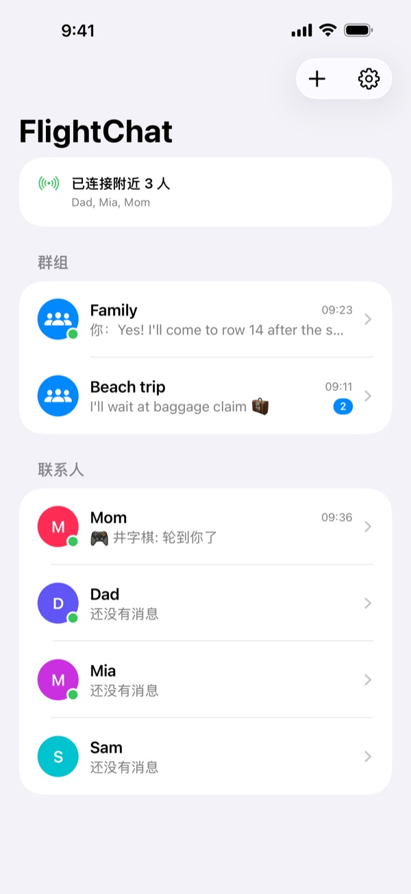
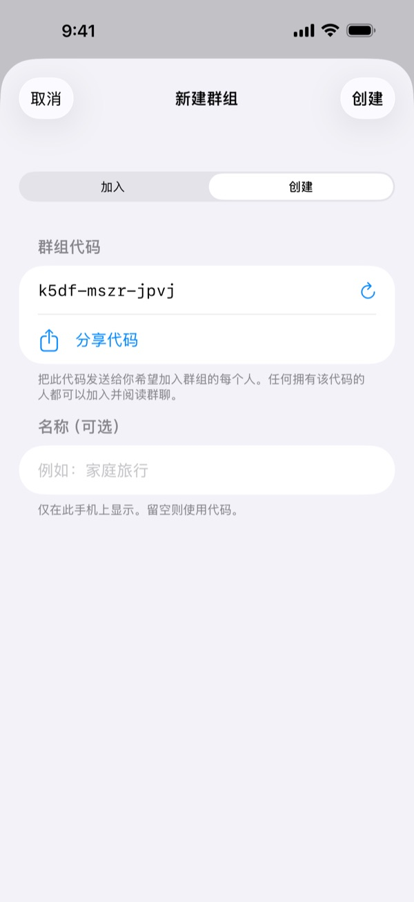
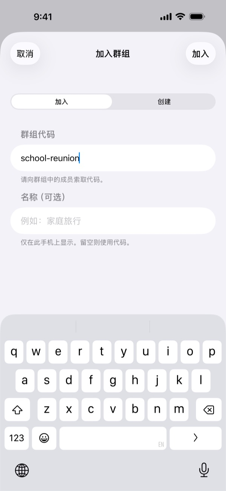
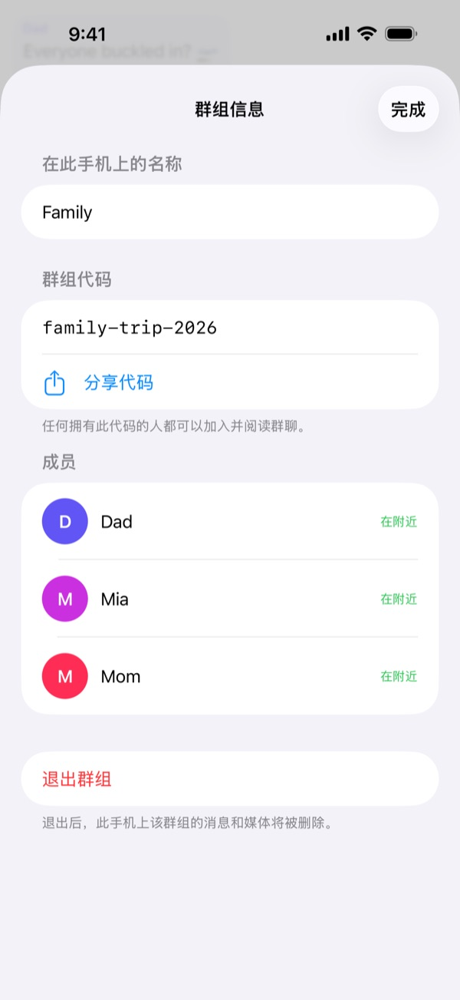
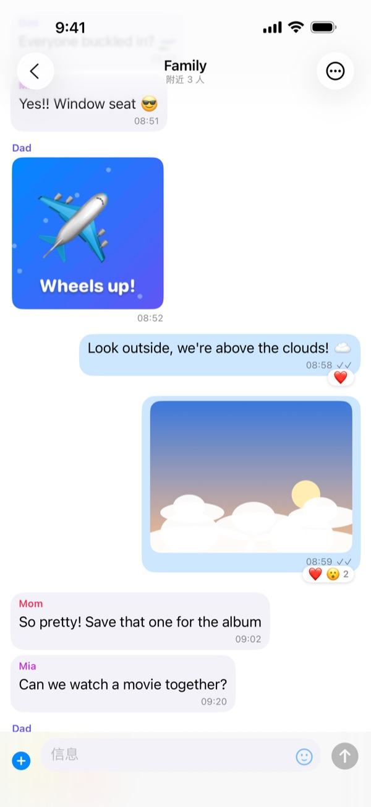
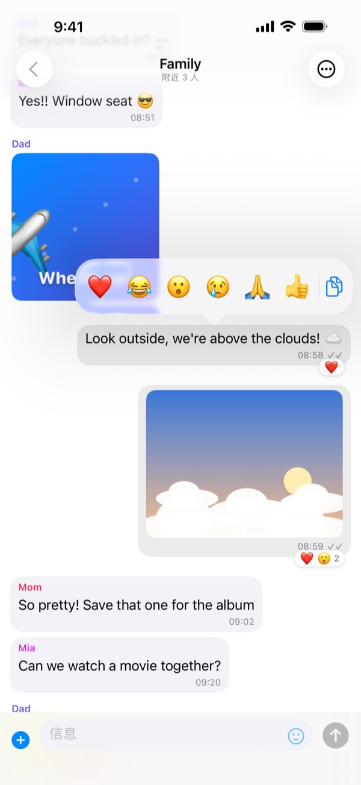
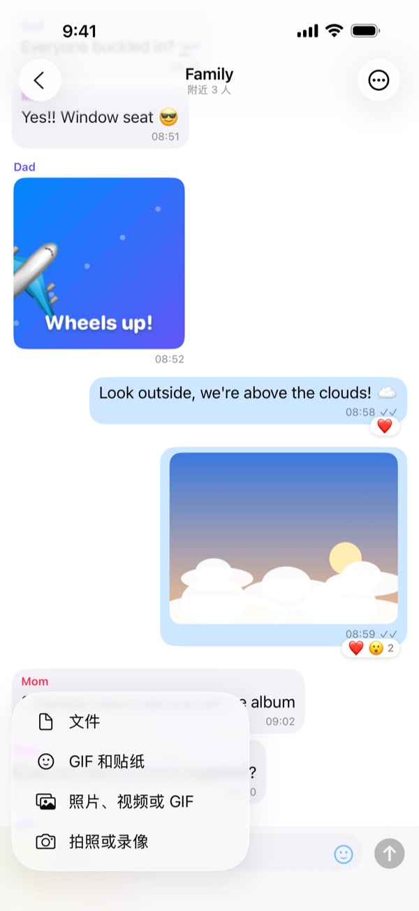
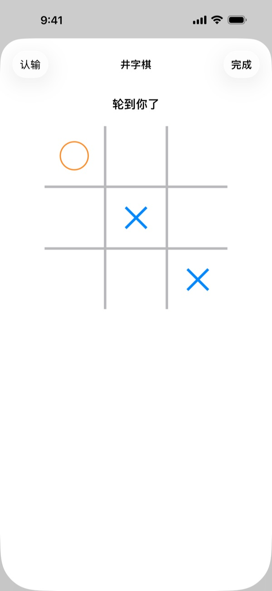
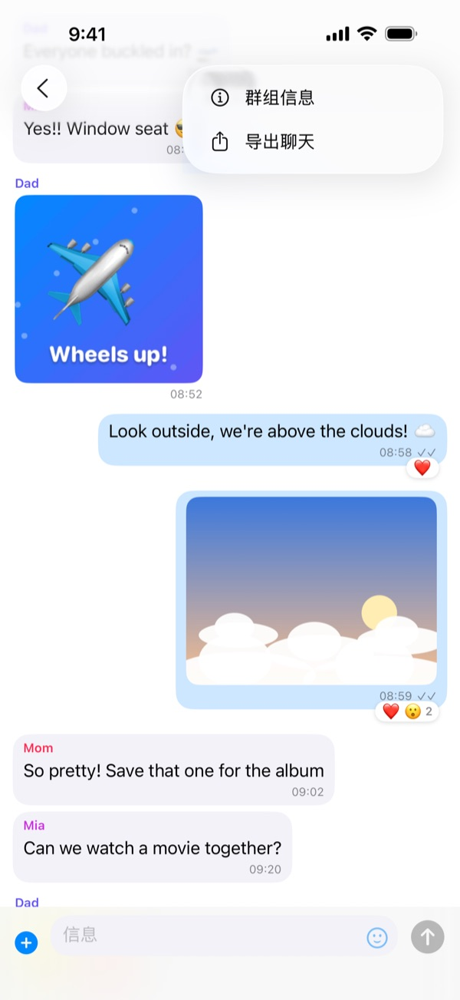

起飞前
趁大家还在一起时（在家或在登机口）把一切设置好：
- 在群组中每个人的手机上安装 FlightChat。
- 由一个人创建群组，并把代码分享给其他人，比如通过短信。
- 其他人用该代码加入群组。
- 发送一条测试消息，确认每个人都能收到。
第一次打开 FlightChat 时，请允许它查找本地网络上的设备。否则它无法找到你的群组。
在飞机上
- 像平常一样打开飞行模式。
- 打开控制中心，重新打开无线局域网和蓝牙。无需加入任何网络。
- 打开 FlightChat。聊天列表顶部会显示谁已连接。
只有在 FlightChat 打开时手机才会连接。回到 App 后，手机会自动重新连接并补收错过的内容。

群组
群组是所有输入相同代码的人共享的聊天。你最多可以同时加入 10 个群组，比如一个家人群组、一个同航班朋友群组，并与所有群组保持连接。
创建群组
- 在聊天列表中，轻点 +，然后轻点创建。
- FlightChat 会生成一个难以猜到的代码。你也可以给群组起个名字。
- 轻点分享代码把代码发给其他人，然后轻点创建。之后也可以在“群组信息”中分享。
加入群组
轻点 +，然后轻点加入，输入别人给你的代码。不区分大小写。
重命名、分享或退出群组
打开群组聊天，轻点 ⋯，然后轻点群组信息。在那里你可以更改群组在你手机上的名称、查看并分享代码、查看成员或退出群组。退出群组会从你的手机上删除该群组的消息和媒体。
请妥善保管代码。任何拥有代码的人都可以加入群组并阅读群聊。



聊天
- 群聊和一对一聊天：每个群组都有自己的聊天。联系人列出与你同在某个群组的所有人。要私下给某人发消息，轻点其名字即可。
- 照片、视频、GIF 和文件：轻点消息框旁边的 +。选择拍照或录像使用相机（视频最长 2 分钟），或选择已有的内容。轻点笑脸可发送贴纸和 GIF。
- 回应：按住一条消息，然后选择表情符号。也可以在那里拷贝文字。
- 全屏：轻点照片或视频。横过手机可以看得更大。使用共享按钮可以存储。
- 勾号：✓ 表示消息已保存并发送给已连接的人。✓✓ 表示所有收件人都已收到。
- 不在附近？发给未连接的人的消息会在重新连接后发送。



游戏
在一对一聊天中和对方玩个小游戏：轻点 +，然后轻点玩游戏，选择一个游戏。聊天中会为你们双方显示游戏卡片，轻点即可开始。游戏结束后，轻点再来一局，由对方先手。
- 井字棋：轮流放置 ✕ 和 ◯，连成三个即获胜。
- 四子棋：轮流把棋子投入某一列，横、竖或斜向连成四个即获胜。
- 石头剪刀布：双方同时出拳。在双方都出拳之前，任何一方的手机都看不到对方的选择。
游戏只会发送给对方。如果其中一人离开连接范围，游戏会暂停，手机重新连接后继续。

导出聊天
打开聊天，轻点 ⋯，然后轻点导出聊天。FlightChat 会生成一个 ZIP 文件，包含文字形式的对话以及你手机上的照片、视频和文件。可以存储到“文件”、通过隔空投送发送，或在恢复联网后用电子邮件发送。

屏蔽和举报
- 在一对一聊天中：轻点 ⋯，然后轻点屏蔽或举报。
- 在群聊中：按住对方的消息，然后轻点手形图标。
- 你将不再看到对方的消息，对方也无法给你发消息。对方不会收到通知。
- 举报并屏蔽还会通过电子邮件向我们发送举报。我们会在 24 小时内回复。
- 在设置 → 已屏蔽的人中取消屏蔽。
被你屏蔽的人如果有群组代码，仍能阅读群聊。要彻底移除对方，请和其他人约定一个新群组，并退出旧群组。
如果你在机上感到不安全，请立即告知机组人员。
如果手机无法连接
- 检查控制中心里的无线局域网和蓝牙是否都已打开。飞行模式会关闭它们。
- 在两部手机上都保持 FlightChat 处于打开状态。
- 确认你们在同一个群组：打开群聊，轻点 ⋯，然后轻点群组信息，比较代码。
- 在 iPhone 的“设置”App 中打开 FlightChat，确保已打开本地网络。
- 靠近一些。相隔几排的手机通常能连接；大型飞机的两端可能连不上。
- 刚加入群组？群组里的手机会在几秒钟内找到你。
- 最多可以有 8 部手机同时相互连接（包括你的手机）。
语言
FlightChat 使用 iPhone 的语言：英语、法语、西班牙语、中文、日语、希伯来语、韩语或阿拉伯语。希伯来语和阿拉伯语从右往左阅读。消息、名字和贴纸始终按发送时的原样显示。要只为 FlightChat 选择语言，请轻点聊天列表上的齿轮图标，选择语言，轻点存储，然后关闭并重新打开 FlightChat。也可以在 iPhone 的“设置”App 中的 App → FlightChat → 语言里选择。
你的数据
你的消息只保存在你的手机和群组成员的手机上。没有账户，也没有服务器。要删除所有内容，请打开设置并轻点清除聊天记录。详情请阅读隐私政策和使用条款（英文）。
联系我们
遇到问题或有疑问？请发送电子邮件至 biomass-65-jumbo@icloud.com。